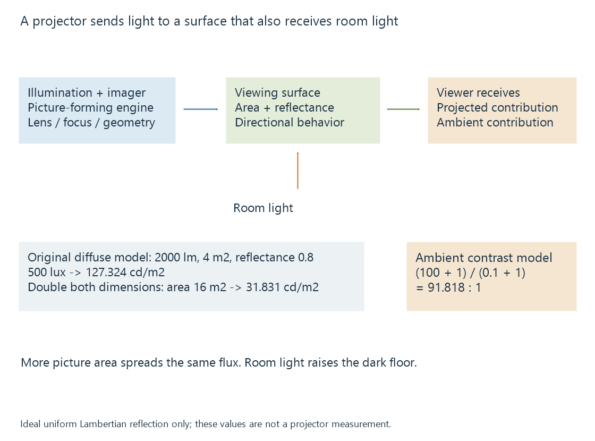

Projectors and the viewing surface
A projector forms a picture through an imaging engine and optics onto a viewing surface whose size, reflectance and ambient illumination affect the visible result.
A projector does not end its picture path at an internal panel. Its imaging engine and lens put light onto a screen or other surface, which then sends some of that light toward the viewer.
The viewing surface and room therefore participate in the displayed picture. A projector with the same settings can produce a different visible result after its image is enlarged or the room lights are changed.
Illumination and imaging do different jobs
A lamp, LEDs or lasers supply illumination. An imaging arrangement controls the picture carried by that light.
Epson’s 3LCD description separates light into red, green and blue paths, modulates them through their LCD panels and recombines them. DLP uses controlled micromirrors; TI also documents optical-actuator arrangements that create shifted sub-images.
“Laser projector” identifies the light source, not a unique pixel technology or a guarantee about contrast. The imaging engine, optics and drive arrangement still determine important picture properties.

Lumens and screen luminance are different quantities
A lumen figure concerns luminous flux. Screen luminance, commonly expressed in cd/m² or nits, describes light leaving the surface in a viewing direction.
To connect them, the screen’s area and reflection need assumptions. Consider an original ideal model:
- 2,000 lumens reach a uniformly illuminated four-square-metre screen.
- The screen reflects 80% of incident light.
- Reflection is diffuse, following an ideal Lambertian relationship.
Illuminance is flux divided by area. Luminance for this model is illuminance multiplied by reflectance and divided by π:
Illuminance = 2000 / 4 = 500 lux
Luminance = 500 × 0.8 / π = 127.324 cd/m²
Doubling both picture dimensions gives four times the area. The same flux then produces 125 lux and 31.831 cd/m² in this model.
Real screens can direct light differently; projector output can be nonuniform, and the usable output depends on the selected picture mode. The calculation is not a conversion rule for every advertised lumen value.
It explains why enlarging the Emby movie’s projected image can reduce its brightness without changing the video stream.
Room light raises the dark floor
Assume a second original model has projected white at 100 cd/m² and projected black at 0.1 cd/m². In the absence of ambient contribution, their ratio is 1000:1.
If the room adds a uniform one cd/m² of reflected luminance to both areas:
Visible white = 100 + 1 = 101 cd/m²
Visible black = 0.1 + 1 = 1.1 cd/m²
Contrast = 101 / 1.1 = 91.818:1
The white changes little proportionally; the black changes greatly. Raising projector output is consequently not equivalent to removing ambient light.
A screen with directional properties can change which room light reaches the viewer. Its orientation and viewing geometry then become part of the result. The simple diffuse model above deliberately excludes those effects.
The input mode is not the final optical detail
A projector can accept a source larger than its physical imaging grid and resample it. Some arrangements create multiple shifted positions during a frame.
Native resolution separates the physical imager from accepted input and temporally addressed screen positions. Lens focus, alignment and the screen also affect whether fine detail survives.
A keystone correction can resample the picture to compensate for geometry. That correction cannot add optical focus or make every source position map directly onto an imaging element.
HDR needs a target suited to the projected image
An HDR input describes an intended signal interpretation. The projector and screen must still map that signal into their usable luminance and contrast.
A mastering peak is not a command to produce the same measured luminance on every projected screen. Tone mapping addresses the adaptation; display peak brightness explains the conditions needed to describe its target.
See Also
- Native display resolution
- HDR display capabilities
- Display peak brightness
- Why Tone Mapping Is Needed